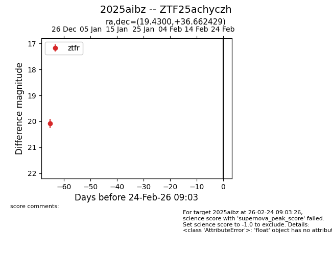
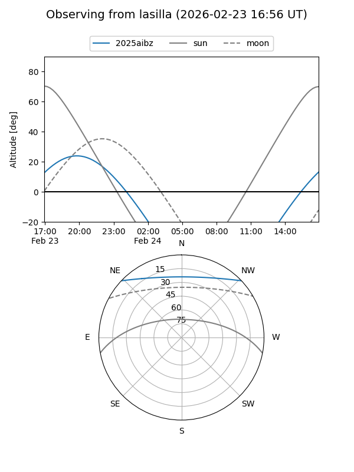
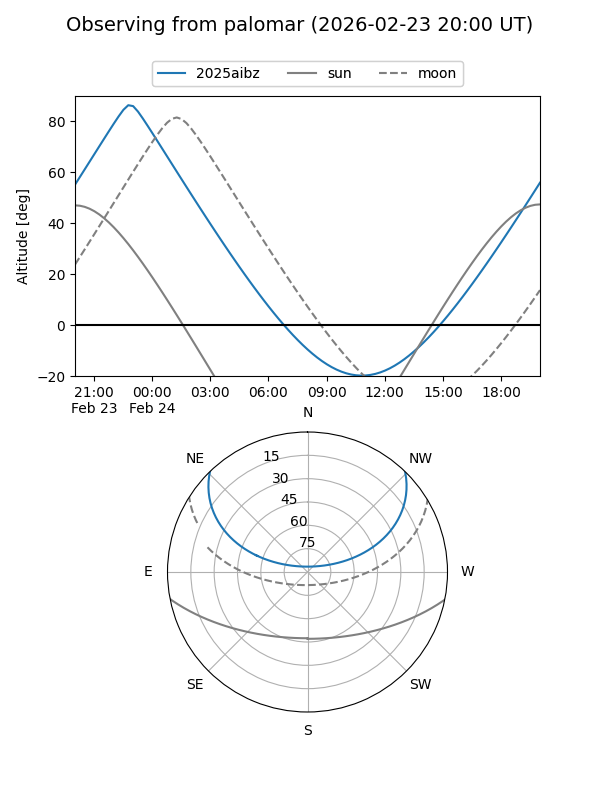

2025aibz
Target 2025aibz at 2025-12-24 16:17
Aliases and brokers:
FINK: fink-portal.org/ZTF25achyczh
Lasair: lasair-ztf.lsst.ac.uk/objects/ZTF25achyczh
ALeRCE: alerce.online/object/ZTF25achyczh
TNS: wis-tns.org/object/2025aibz
YSE: ziggy.ucolick.org/yse/transient_detail/2025aibz
alt names
ZTF25achyczh (ztf,fink_ztf)
2025aibz (tns,yse)
Coordinates:
equatorial (ra, dec) = 19.4300,+36.66243
equatorial (HMS+DMS) = 01:17:43.21,+36:39:44.75
galactic (l, b) = (128.7890,-25.91024)
Flags:
Photometry:
last ztfr=20.08
1 ztfr detections
Lightcurve

Visibility


Additional plots